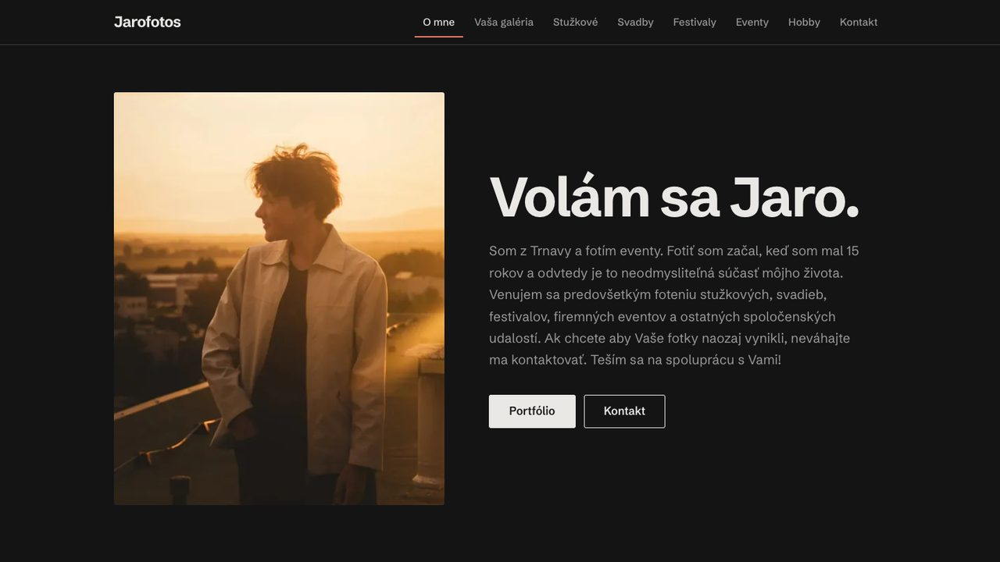
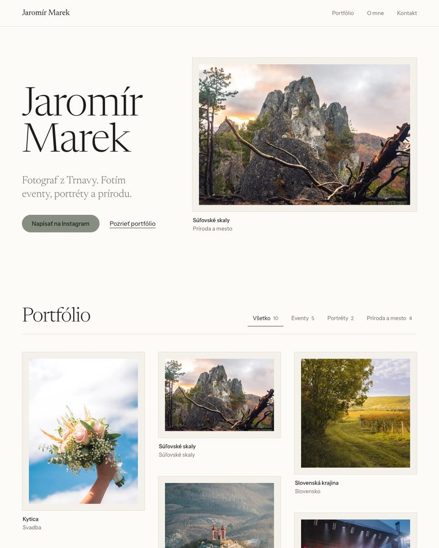
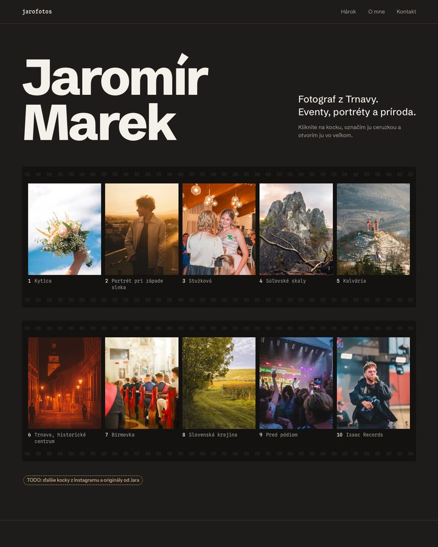
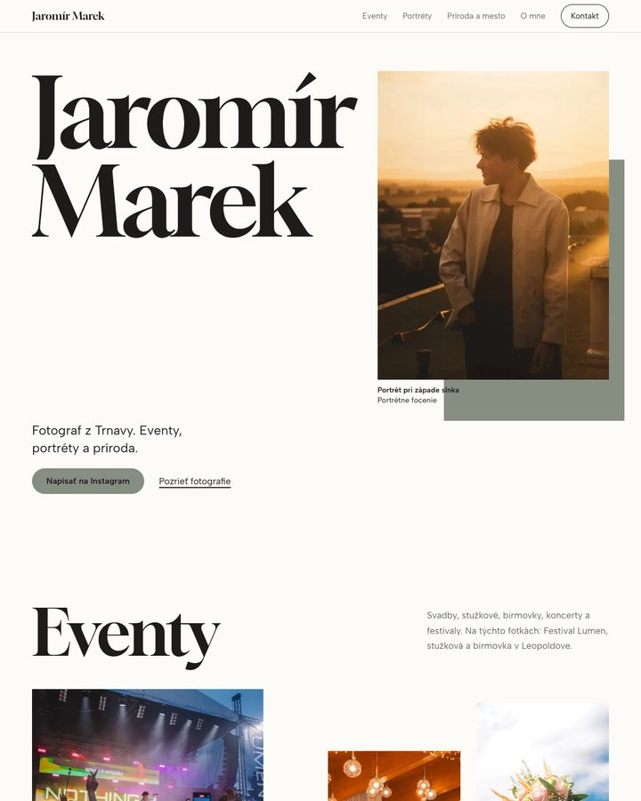
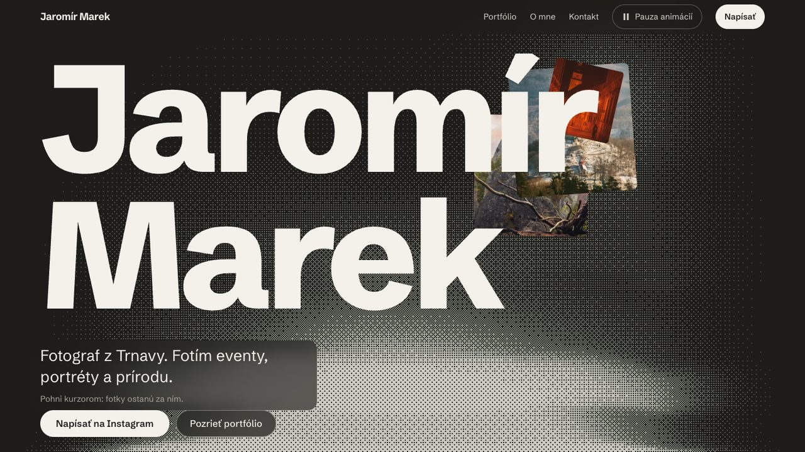

Album
Jarova verzia E: jeho farby, písmo, poradie sekcií, texty a jemné objavenie pri scrolle, so skutočnými fotkami. Klienti si zadajú kód a otvorí sa im galéria z Google Disku, kde si fotky pozrú a stiahnu. Kontakt: telefón, e-mail, Instagram a Facebook.
Galéria je zatiaľ ukážka: v časti „Dostali ste kód?“ zadajte kód UKAZKA. Prepojenie s Diskom nastaví Jaro podľa návodu.
Otvoriť návrh 5
Tichá galéria
Svetlé pozadie, pasparty a štítky ako v galérii. Fotky hovoria samy, návštevník si ich filtruje podľa typu.
Otvoriť návrh 1
Kontaktný hárok
Tmavá stránka a filmové pásy s číslami záberov. Kliknutie označí kocku ceruzkou a otvorí ju vo veľkom.
Otvoriť návrh 2
Reportáž
Veľká typografia, asymetrické strany podľa žánrov a šalviová plocha pre portréty. Fotky sa pri scrolle jemne posúvajú.
Otvoriť návrh 3
Experiment: Svetlo
Bodkovaný východ slnka, fotky ostávajú za kurzorom alebo vyskakujú samy, pásy žánrov reagujú na scroll a portfólio sa vlní na naklonenej ploche. Na mobile beží aj bez myši, animácie sa dajú zastaviť.
Potrebuje JavaScript a otvára sa cez webový server, nie priamo zo súboru.
Otvoriť experiment